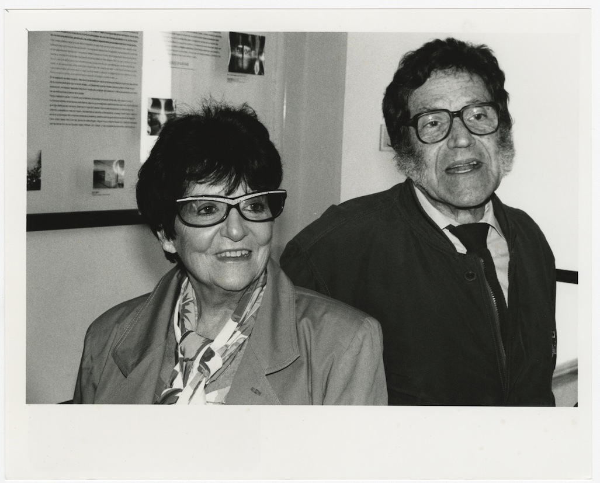
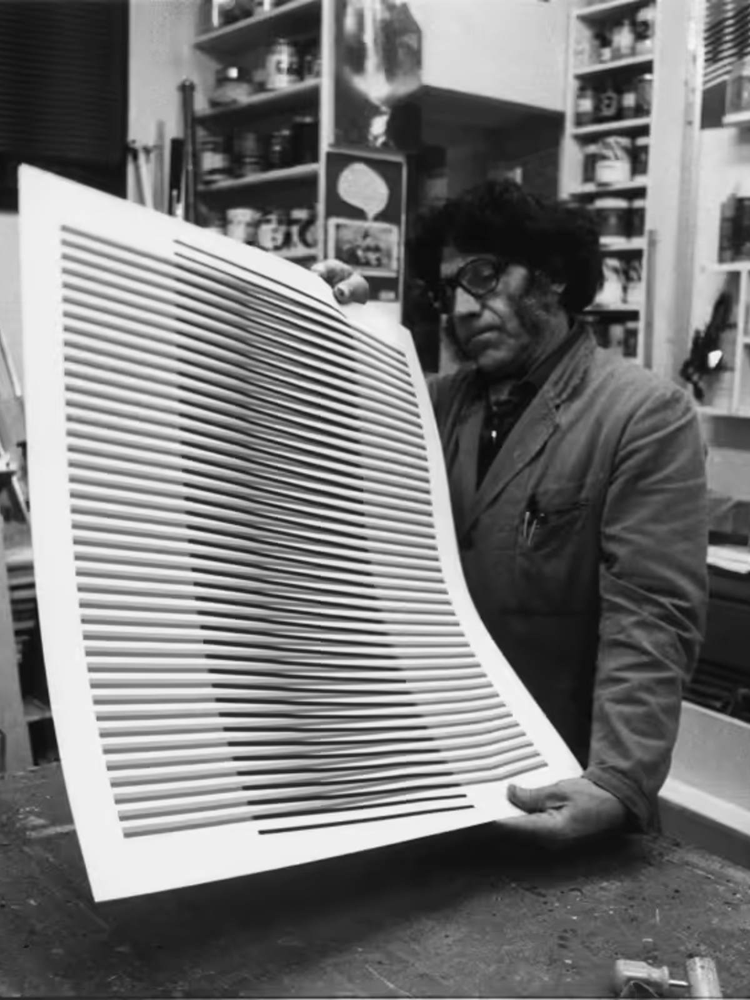
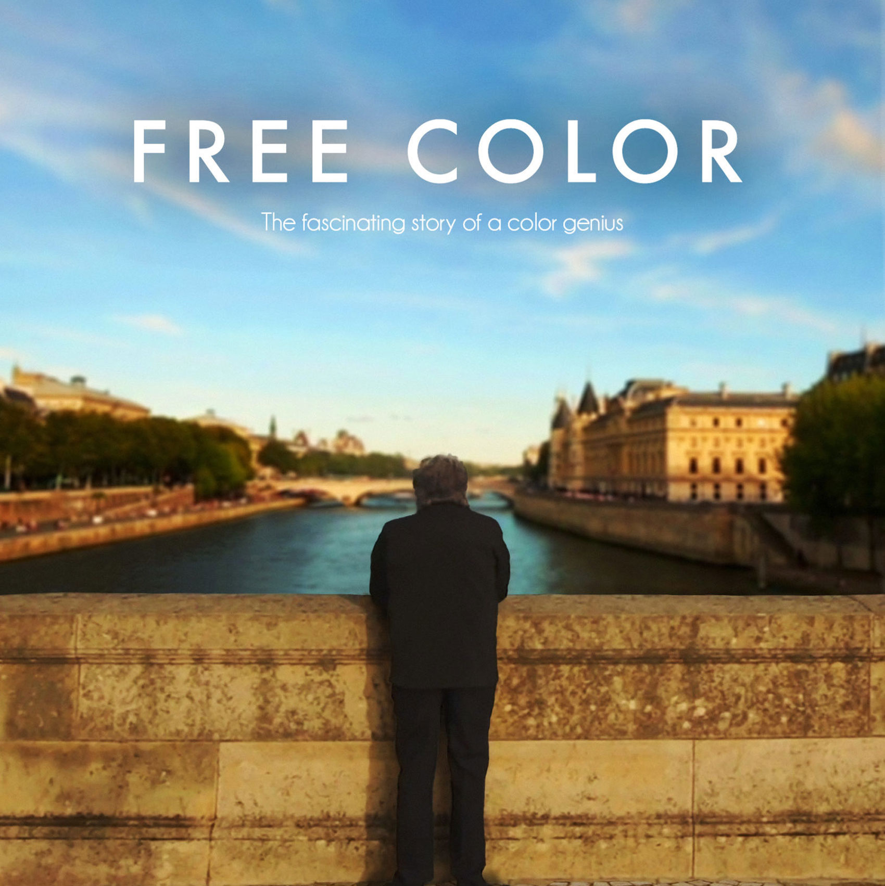

Familia y Primeros años
Carlos Eduardo Cruz-Diez nació el 17 de agosto de 1923 en La Pastora, Ciudad de Caracas, Venezuela. Hijo de Carlos Eduardo Cruz Lander, un aclamado químico y poeta de ascendencia alemana y canaria, y Mariana Diez Feo.
Ilustraciones y evolución hacia la abstracción

En 1944 trabaja como ilustrador y diseñador gráfico de la revista El Farol de la Creole Petroleum Corporation e ilustra también otras publicaciones. Realiza, asimismo, cómics para diversos periódicos venezolanos. En 1954 comienza a interesarse por las corrientes abstractas y realiza una serie de proyectos para murales exteriores con elementos geométricos y ese mismo año presenta estos proyectos en el XV Salón Oficial (1954), los cuales producen comentarios de sorpresa por su conversión a la abstracción".
Mudanza a París y el Arte Cinético
En 1960 Cruz Diez decide instalarse definitivamente en París con su familia.Al año siguiente participa en la exposición Bewogen Beweging en el Stedelijk Museum de Ámsterdam donde también colaboraron artistas como Allan Kaprow, Alexander Calder, Moholy-Nagy, Robert Rauschenberg, Jean Tinguely, Marcel Duchamp, Victor Vasarely, entre otros. En 1965 lo nombran Asesor en el Centro Cultural Noroit, en Arras (Francia) y ese mismo año participa en The Responsive Eye en el Museum of Modern Art de Nueva York,9 exposición que supone la consagración oficial del arte cinético.
El Museo y la Cruz-Diez Art Foundation
Para 1996 se inicia la construcción del Museo Carlos Cruz- Diez y en 1997 el artista es nombrado Presidente del museo y miembro del Consejo Superior de la Fundación Museo de la Estampa y del Diseño Carlos Cruz-Diez, que tiene como objetivo estudiar, difundir, coleccionar y conservar el trabajo de diseñadores y artistas gráficos nacionales e internacionales relacionados con la estampa y el diseño. En 2005 su familia crea la Cruz-Diez Art Foundation dedicada a la promoción, conservación, desarrollo y difusión de su legado artístico y conceptual.
Articruz Panamá y Reconocimiento Internacional

En 2008, dos años antes del 50 aniversario de su llegada a París, Cruz-Diez obtiene la nacionalidad francesa. En 2009 su familia crea en Panamá el Atelier Articruz. Para 2011 inaugura su mayor exposición retrospectiva Carlos Cruz-Diez. Color in Space and Time en el Museum of Fine Arts (MFAH) de Houston en Estados Unidos, exposición que también viajó a La Pinacoteca de Sao Paulo en Brasil, el Museo de Arte Latinoamericano de Buenos Aires (MALBA) en Argentina y el Museo Universitario de Arte Contemporáneo (MUAC) en México. En el 2012 recibe el grado de Oficial de la Ordre national de la Légion d’honneur.
Últimos años y muerte
En 2019 se le dedica una retrospectiva en el Museo de Arte Contemporáneo de Panamá junto a sus obras más recientes. Cruz Diez falleció de forma natural el 27 de julio de 2019 en París.